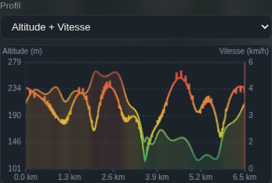
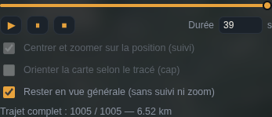

Visualisez un fichier GPX sur une carte 3D, consultez son profil et rejouez le parcours. Tout se passe dans votre navigateur, sans installation.
1.Démarrer
- Ouvrez l'outil dans un navigateur récent.
- Cliquez sur Charger un GPX… ou glissez un fichier
.gpxn'importe où dans la fenêtre. - La carte se cadre sur la trace. Appuyez sur ▶ pour la rejouer.
Pas de fichier sous la main ? Téléchargez la trace d'exemple (parcours fictif).
2.L'interface

En-tête du panneau
| Bouton | Rôle |
|---|---|
| Crayon | Ouvre The-GPX-Box pour créer ou modifier un tracé (la trace chargée y est transmise). |
| Engrenage | Options : couleur et épaisseur de la trace, thème, icônes flottantes. |
| Nuage | Traces GPS OpenStreetMap : importer ou envoyer. |
| EN / FR | Change la langue de toute l'interface (choix mémorisé). |
| i | Aide rapide et documentation, avec un lien vers cette page. |
Sur tablette, téléphone ou fenêtre étroite, ces boutons sont regroupés dans le menu Outils (bouton à trois traits, en haut du panneau).
Sur la carte
- Clic gauche + glisser : déplacer la vue. Clic droit + glisser (ou deux doigts) : pivoter et incliner.
- Molette, pincement ou boutons + / − : zoomer.
- Barre verticale en bas à droite : inclinaison de 0° à 70°.
- Icône épingle (à côté de l'échelle) : coordonnées du curseur en WGS84, Lambert 72 ou Lambert 2008.
- Bouton Street View (sous la boussole) puis clic sur la carte : ouvre Google Street View à cet endroit dans un nouvel onglet.
- Languette ‹ / › au bord du panneau : masque ou réaffiche le panneau.
- Poignée au bord droit du panneau : redimensionne (largeur mémorisée).
Icônes flottantes : la barre météo, les boutons +/−, la boussole, la barre d'inclinaison, la boîte de coordonnées et l'échelle se déplacent à la souris. Le bouton « Remettre les icônes de la carte à leur place » se trouve dans l'aide rapide (i).
3.Charger une trace
- Charger un GPX… ou glisser-déposer un fichier
.gpx. - Si le fichier contient plusieurs traces, une liste déroulante permet de choisir. Les itinéraires (
rte) ne sont lus que s'il n'y a aucune trace. - Les photos aériennes sont préchargées avant l'affichage de la trace complète (bouton Annuler disponible).
- Le nom de la trace s'affiche dans une pastille en haut de la carte.
- Les points espacés de plus de 8 m sont complétés par interpolation, pour une trace et une caméra fluides.
Fichiers pris en charge
Pour chaque point : position, altitude (ele), heure (time) et toutes les valeurs numériques des extensions (fréquence cardiaque, cadence, température…). Sans altitude, pas de dénivelé ni de profil d'altitude ; sans horodatage, pas de vitesse.

4.Statistiques et profil
Le panneau affiche la distance, le nombre de points, les dénivelés + et − et les vitesses moyenne et maximale.
Les dénivelés sont cumulés point à point : ils sont sensibles au bruit de l'altitude GPS.
- La liste Profil propose Altitude, Vitesse, Altitude + Vitesse et chaque valeur de capteur trouvée dans le fichier.
- Cliquer ou glisser sur le graphique place la lecture à cet endroit du parcours.

5.Lecture animée
- ▶ lance (repart du début si le parcours est terminé), ⏸ met en pause, ⏹ revient à la trace complète. Le curseur permet d'aller à un point précis.
- Durée (5 à 50 000 s) : proposée automatiquement à chaque chargement, modifiable.
- En mode suivi, la durée définit la vitesse à l'échelle 1:500 : la lecture ralentit quand la vue est serrée et accélère quand elle est large (de 3 % à 5× la vitesse réglée).
- Un geste manuel pendant la lecture suspend le suivi 300 ms ; un zoom manuel est conservé jusqu'à l'arrêt.

6.Modes de caméra
Trois cases à cocher sous les commandes de lecture :
| Case | Effet |
|---|---|
| Centrer et zoomer sur la position (suivi) | La caméra reste centrée sur le point à l'échelle 1:500, limitée à 1:1000 pendant les 10 premières secondes, le temps que les tuiles se chargent. |
| Orienter la carte selon le tracé (cap) | La carte pivote pour regarder le tracé de côté (+90° par rapport à la marche), avec anticipation de 25 m et lissage. |
| Rester en vue générale (sans suivi ni zoom) | La trace entière reste affichée ; seul un point bleu la parcourt et la caméra ne bouge pas. Cochée au démarrage ; elle désactive suivi et cap. |
Pour suivre le point de près, décochez d'abord la vue générale : les cases Suivi et Cap deviennent alors disponibles. La durée saisie est mémorisée séparément pour chaque mode.
7.Fonds de carte et relief
Le bouton carte (dans la carte, sous Street View) ouvre le menu des fonds.
- Fond : OpenTopoMap, CartoWeb.be (IGN Belgique), Plan IGN (France), Geoportail.lu (Luxembourg) ou CyclOSM. Hors de sa zone de couverture, un fond régional est remplacé par OpenTopoMap sans changer votre choix.
- Superpositions : Photo aérienne, Sentiers balisés (Waymarked Trails) et Relief 3D.
- Curseur d'opacité : avec la photo aérienne, règle le fond par-dessus (0 % = photo seule, 100 % = fond opaque).
- Relief exagéré ×1,6 avec ombrage ; l'inclinaison se règle avec la barre verticale.
Le fond choisi et les sentiers sont mémorisés. La couleur de trace « Auto » s'adapte au fond pour rester visible.
8.Options et thème
Le bouton engrenage de l'en-tête déplie :
- Couleur de la trace (bouton Auto pour l'adapter au fond) et Épaisseur (1 à 12).
- Thème : Foncé, Gris ou Clair.
- Icônes flottantes : Oui / Non.


9.Points de la trace
Un clic droit sans glisser sur la carte ouvre un petit menu :
- Afficher les points : montre chaque point de la trace.
- Infobulles sur les points : détail d'un point au survol (disponible quand les points sont affichés).
Un clic droit avec glissement continue de pivoter la carte, il n'ouvre pas le menu.

10.OpenStreetMap
Le bouton nuage ouvre le panneau Traces GPS · OpenStreetMap.
Première utilisation
- Connecté à OSM, ouvrez Mes applications OAuth 2.
- Nom :
GPX 3D· URI de redirection : l'adresse exacte de la page de l'outil (affichée dans le panneau). - Décochez « Application confidentielle ».
- Cochez « Lire les traces GPS privées » et « Téléverser des traces GPS ».
- Collez l'ID client obtenu dans le panneau, puis Se connecter à OpenStreetMap.
La connexion exige une page en https:// ou sur http://localhost ; elle ne fonctionne pas en ouvrant le fichier en local (file://). Une application déjà déclarée pour The-GPX-Box convient : ajoutez simplement cette URI de redirection.
Importer
- Mes traces : liste de vos traces, bouton Importer.
- Autre trace : lien ou numéro d'une trace publique ou identifiable.
- Itinéraire : un nom ou un numéro de balisage (GR 5…) est cherché dans la zone visible de la carte.
Envoyer
Envoie la trace chargée sur votre compte, avec une description (obligatoire), des étiquettes et la visibilité (identifiable ou traçable). OSM exige un horodatage par point : les heures du fichier sont conservées, sinon elles sont synthétisées.

11.The-GPX-Box
Le bouton crayon ouvre The-GPX-Box dans son propre onglet, avec la trace chargée. Le bouton montagne de The-GPX-Box fait le chemin inverse. La trace transite par le stockage local du navigateur et n'est valable que 2 minutes.
12.Lieu et météo
Une barre translucide, en haut à droite de la carte, affiche le nom du lieu et la météo actuelle ; survolez-la pour le détail.
- Au démarrage : la carte se centre sur votre position si vous autorisez la géolocalisation, sinon sur la Belgique.
- Avec une trace : le point de départ, puis le point courant pendant la lecture.
- Le lieu (Nominatim) est actualisé après 400 m de déplacement ; la météo (Open-Meteo) après 5 km ou si le relevé a plus de 10 min.
C'est la météo actuelle du lieu, pas celle du jour où la trace a été enregistrée.
13.Dépannage
Carte noire ou pas de fond
Vérifiez la connexion Internet, ou une éventuelle protection qui bloque les tuiles (pare-feu, bloqueur de contenu).Barre lieu + météo absente
Géolocalisation refusée (sans trace), ou service injoignable ou limité. Elle apparaît dès qu'une trace est chargée.Lieu ou météo figés
Normal tant que le point n'a pas bougé de 400 m / 5 km et que le relevé a moins de 10 min.Aucune courbe de vitesse
Le fichier GPX n'a pas d'horodatage.Fichier refusé
XML invalide, ou ni trace ni itinéraire exploitable.Lecture trop rapide ou trop lente
Ajustez le champ Durée ; en mode suivi, le zoom influe aussi sur la vitesse.Le suivi et le cap sont grisés
La vue générale est cochée : décochez-la pour les activer.La connexion OpenStreetMap échoue
Utilisez une page servie en https:// ou http://localhost, et vérifiez l'URI de redirection déclarée sur openstreetmap.org.14.Confidentialité
Le fichier GPX est lu localement dans le navigateur et n'est envoyé nulle part, sauf si vous l'envoyez vous-même sur OpenStreetMap. Sont transmis : les coordonnées des tuiles aux fournisseurs de fonds de carte, et la position courante à Nominatim (nom du lieu) et Open-Meteo (météo).
Imagerie © Esri, Maxar, Earthstar Geographics · Relief © AWS Open Data Terrain Tiles / Mapzen · Fond topo © OpenStreetMap contributors, SRTM, style © OpenTopoMap (CC-BY-SA) · Géocodage Nominatim · Météo Open-Meteo.